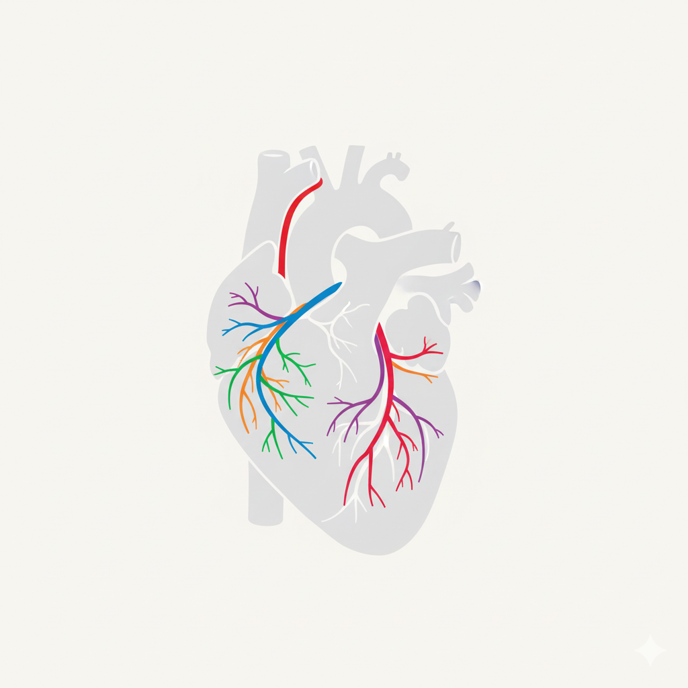

Diagrama Coronario
Instrucciones: Seleccione una arteria y un grado de lesión en el panel de control para graficar un hallazgo.

Herramienta para graficar lesiones coronarias a partir de un reporte.
Instrucciones: Seleccione una arteria y un grado de lesión en el panel de control para graficar un hallazgo.
Aún no se han añadido hallazgos.